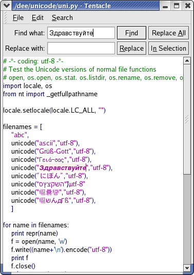
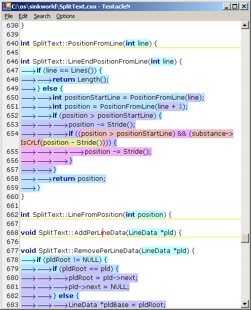

Biggest change is that restyling is optimized through adding some complexity to the styled area of a styling buffer. There may now be a hole that is unstyled within the styled area. When a modification is made to the text within the styled area, a hole is removed from the styling of that line. An attempt is then made to restyle just the hole. If the restyling did not produce any changes that affect styling after the hole then the whole of the styled area is again considered styled and only the hole range is redrawn. This checks not only the styling buffers but ancillary history objects that lexers use to keep track of other state such as the current scripting language in a web page or the stack of here documents in Perl.
Decorations can be translucent on all platforms. A RoundedBox decoration is implemented with alpha and alphaoutline attributes. If only alpha is set then the whole rounded box is drawn and filled with this alpha (0=transparent, 255=opaque). If alphaoutline is set then the box is outlined with this degree of translucency. The graphics code supports drawing arbitrary polygons with translucency. Alpha drawing may be slower than opaque drawing and this depends on the platform.
Some other text widgets can show the selection range by drawing lines around it. This is now implemented in SinkWorld as the 'box' facet that takes a color value. It can be used for any styling that may spread over multiple lines and is drawn with rounded corners. As the implementation depends on information from multiple lines it didn't fit in with some aspects of the drawing code so there can only be one box facet in use at a time. This doesn't yet work well with horizontal scrolling.

A generic prototype registry acts as a source of lexers, folders and decorations that can be retrieved by name. The bin/RegistryGen.py script reads source files, choosing class names that fit naming patterns and generates code that registers all classes. This makes it easy to add a new lexer, folder or decoration, by just adding the implementation files and running the script.
The caret now blinks. Folds can be expanded and contracted by clicking on fold markers in the margin. Text is now aligned on its baseline so doesn't go up and down when different sizes used.
Options files may now contain inline structured values using '{' and '}' so there is less need for multiple line values. The '\' character can be used to quote the next character. The first style in a set (often called 'Default') is used for drawing unstyled regions of the window including line ends and any extra vertical space after the end of the file. This is mostly used to set a background color for the whole window.
Python wrappers are more consistent and simpler. The C++ Python wrappers ensure correct GIL usage. Lexers written in Python work. IronPython improved so workarounds removed.
These include the compiled executables or libraries and the settings files. The settings files are user.options and *.mode and these should be copied into the user's home directory (~ on Linux and %USERPROFILE% on Windows) before running the application.
These require the appropriate Python platform ( Python, Jython, or IronPython) and its prerequisites to be installed and the Windows version also requires ctypes to be installed.
There are Python wrapper libraries for SinkWorld and example applications for each platform. Jython is used in the Java environment and IronPython on .NET and on each of these platforms Python interacts naturally with the Java / C# libraries. For CPython the libraries required explicit wrapping and this was done using Boost Python.
The implementations now read much more of their functionality, such as file filters for the open dialog from the modes files. There is a Mode menu in most of the applications which allow choosing a particular mode rather than the one associated with a file's extension.
There is information on building for each platform.
Modes are the most significant addition in this release. Previous releases contained some ad-hoc explicit code for combining lexers and this release generalizes this so that the configuration can be manipulated at a high level and be defined in options files.
When a file is loaded, its extension is used to find the main mode that Tentacle should use for that file. This may be extended to also allow detection of marker text and user choice of mode. The main mode is then used as the key for selecting properties and submodes.
A complex language like HTML may allow embedded segments in other languages like JavaScript or CSS (Cascading Style Sheets). These embedded segments should be styled according to the rules of their language rather than that of the including file. It is also possible to modify the settings of a mode when it is used as a submode by declaring an extra mode for that embedding.
Each embedded language defines a mode that is incorporated into the HTML mode as a submode. Submodes may fulfil specific roles such as the html role within ASP which is treated specially but others are generic such as the set of client side scripting languages in HTML.
Layers are modes that are orthogonal to the main mode such as spelling checkers and code validators and may depend on the styling information generated by the main mode.
Tentacle behaviour can be defined through text configuration files rather than being hard coded as in previous releases. The file format tries to fix some of the weaknesses in SciTE's properties files.
SinkWorld lexers provide more information to callers than do Scintilla lexers. This include sthe number of lexical states that they produce and the names of these states. This information may be extended in the future to provide some information about how to treat such ststes such as saying that Comment and CommentDoc are both comments. This could be used to determine that a spelling checker should examine text in these states but not in states that are operators.
The project directories have been restructured for this release.
| sinkworld |
| cxx |
| tentacle |
| cxx |
| csharp |
| java |
| csharp |
| java |
| bin |
| doc |
| html |
| test |
| examples |
Source code for generic data structures and lexers are in cxx.
Source code for the Tentacle application, interfacing to GUI libraries (Win32 and GTK+) and data structures related to GUIs are in tentacle/cxx. The application is built on Windows by loading the Tentacle solution file into Visual Studio .NET and performing the Build Solution command. On GTK+, make is run.
The Translate.py script in bin expands templated files in cxx and translates all the source code into C# and Java to produce the contents of the csharp and java directories. It also translates most of the data structure source code in tentacle/cxx into C# and Java placing these files into tentacle/csharp and tentacle/java.
tentacle/csharp contains application code for C# and classes for interfacing to Windows Forms. The application, TentacleN.exe is built by running make.
tentacle/java contains application code for Java and classes for interfacing to Swing. The application, tentacle.jar is built by running make and executed by java -jar tentacle.jar.
The tentacle directory contains configuration files for the tentacle applications. These should be placed in the user's home directory before running any of the application.
Scripts used in building are in bin and documentation in doc. API documentation is is doc/html and the index.html file is the starting point.
Unit tests are in test and example files used in unit tests in test/examples.
Tentacle is implemented for 4 platforms and is available in archives for these executable forms:
Each archive also contains 4 configuration files (user.options, base.mode, cxx.mode, html.mode) that should be copied into the user's home directory.
Source code can be retrieved from the Scintilla CVS under sinkworld/tentacle with tag rel-3-2 and as a zip file. The zip file contains the Java and C# files translated from C++ so can be used by people that don't want to run the Python Translate.py script. CVS only contains the initial files so, to use source from CVS, Translate.py must be run even when only building C++.
A large number of unit tests have been added in test/SimpleTest.cxx. These cover all the implemented public data structure classes and lexers. The C# and Java unit tests have not been maintained and may be dropped unless they can be automatically generated from C++.
The lexer unit tests use and generate .styled text files which show how an example file was styled with "{<number>}" elements showing where each style starts. This should make it easier to determine what impact a change has made and diminish the chance that a change has caused an undiscovered regression. The .styled files start with a key listing all the lexical classes.
| x.cxx.styled |
| 0=CPP.Default |
| 1=CPP.Comment |
| ··· |
| 17=CPP.KeyWord |
| {2}// A demonstration program{0} |
| {17}int{0} {16}main{9}(){0} {9}{{0} |
| {16}printf{9}({5}"hello world %d\n"{9},{0} {4}9{9});{0} |
| {9}}{0} |
Where a modification has changed the set of lexical classes, the ExpandStates.py script can convert .styled files so that the style change elements are shown with style names rather than numbers making it easier to run diff over them.
| x.cxx.styled |
| ··· |
| {CommentLine}// A demonstration program{Default} |
| {KeyWord}int{Default} {Identifier}main{Operator}(){Default} {Operator}{{Default} |
| {Identifier}printf{Operator}({Quoted}"hello world %d\n"{Operator},{Default} {Number}9{Operator});{Default} |
| {Operator}}{Default} |
The new generic modes code is not yet able to provide some of the features of previous releases. Folding does not currently work. The brace count feature considers all brace characters rather than only those that are in the operator style so will get confused by a string constant like "(".
These are demonstration GUI front ends for the current code base.
Below is the GTK+ 2.4 version:

Tentacle is implemented for 4 platforms and is available in these executable forms:
It is also available in source form from the Scintilla CVS under sinkworld/tentacle and as a zip file.
The applications allow command line arguments as
tentacle [path]
or for Java
java -jar tentacle.jar [path]
Release 2 includes a line number margin, line wrapping, and folding. Folding depends on a lexer that measures the nesting level of braces and this lexer can be displayed by choosing Options | Brace Level.
Below is the Windows C# version with line wrapping, brace folding and brace level color coding.

A major feature in Tentacle is style merging. SinkWorld allows multiple styling buffers to be attached to a document. For a HTML document, there may be a styling buffer for the basic HTML features like tags, attributes, text and embedded scripts; an URL recogniser; and a spell checker. This style information is generated automatically from the document text by lexer classes. The application may also wish to display dynamic information over the text, such as the selection; brace matches; search matches; and hotspots and can use styling buffers to hold these elements.
Tentacle's StyleSetCollection class describes the relationship between the document text, document styling buffers and application styling buffers and the resulting display. For example, content text may be black and tags in blue bold text, with URLs underlined, spelling mistakes struck out, the selection in italics with a light blue background and identifiers appearing as buttons.
Tentacle uses a layered drawing model with 5 layers.
The decoration layers allow features such as underlines, boxes, buttons and similar to be drawn either underneath or on top of the text. Decoration drawing is performed by classes that implement the IDecoration interface so new decorations can be added. Other layers are drawn by implementations of the IPaintPhase interface.
Window painting is performed layer by layer with all lines of the background color drawn before any text. This allows some degree of overlap between lines with decorations extending outside the bounds of their text. This is also better for modern antialiased drawing libraries where sub-pixel positioning is used. Tentacle should work well with floating point coordinate systems although it currently truncates positions to integral coordinates.
The Tentacle code includes several source code files that are generally useful in implementing styling and caching data: ChangeFinder, PositionCache, StringAtom, StyleSet, TextPositions, and UniConversion are, like core SinkWorld written in a subset of C++ and automatically converted to Java and C#.
Other code is written for the particular language and platform. Surface provides some abstraction of graphics capabilities and Tentacle implements the application and GUI windows.
The generic code may be made part of core SinkWorld or made into a separate library. The platform-specific code is less likely to be maintained although segments that can be turned into generic components may become part of the core libraries.
At this stage I have no plans to produce or maintain reusable GUI components based on this code.
All the code can be reused according to the MIT license. I hope to make the core libraries available as public domain or as near as can be achieved.
Building the various versions of Tentacle requires several tools depending on how much is being built. The CVS set of files requires running a Windows batch file and a Python based converter for the Java and C# versions but the zip file contains all the copied and generated files so should only require a Java or C# compiler. The C++ version requires Visual Studio .Net on Windows. On Linux it should build with standard compilers and tools.